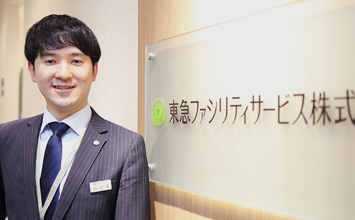

INTERVIEW
自分一人でできる仕事などなく、
必然的に他人を巻き込んで
進めていけるようになれました。
田邉 滋彦SHIGEHIKO TANABE
ビルマネジメント事業部 営業推進部（主任）
- 2008年：入社
- 2009年：出向
- 2014年：復帰
- 技術管理事業部 神奈川技術センター 配属（センター内事務）
- 東急電鉄（ＰＭ関連業務）
- 営業推進部（現所属）
街づくりに関わりたい気持ちがありました
学生時代は音楽サークルに所属。活動と授業の合間にバイト、という感じでした。サークルは熱心に活動してました。就活が始まり、街づくりに関わりたくて不動産業界を調べるうち、管理の仕事を知りました。売ったら終わり、ではなくて、お客さんと継続的な関係を築けるところが、自分の性質に合っていると思えました。
他社との比較ももちろんしましたが、業務の幅がひろく自分も幅ひろい経験ができそう、というのが決め手になりました。地元が東急沿線だったので親近感もありました。沿線の再開発にたずさわれるかなと思ったりも。
カッチリしていてまじめそうな会社さんだなという好印象と、採用担当のみなさんの誠実な対応も決め手でしたね。
学生時代は音楽サークルに所属。活動と授業の合間にバイト、という感じでした。サークルは熱心に活動してました。就活が始まり、街づくりに関わりたくて不動産業界を調べるうち、管理の仕事を知りました。売ったら終わり、ではなくて、お客さんと継続的な関係を築けるところが、自分の性質に合っていると思えました。
他社との比較ももちろんしましたが、業務の幅がひろく自分も幅ひろい経験ができそう、というのが決め手になりました。地元が東急沿線だったので親近感もありました。沿線の再開発にたずさわれるかなと思ったりも。
カッチリしていてまじめそうな会社さんだなという好印象と、採用担当のみなさんの誠実な対応も決め手でしたね。
大型の複合施設に設計段階からたずさわる
2年後3年後の案件はもう動いていて、東横線渋谷駅の跡地や南町田クランベリーモールの再開発にも参加してます。大型施設は今やきれいで清潔感があってあたり前。美感を保つ仕組みを設計段階でいかに入れ込んでいくかが重要です。
初めての大型施設はログロード代官山でしたが、床材のチョイスや管理スペースの配置など、管理目線での提案を採用してもらえました。プロとして広く深い知識を求められますが、経験豊富な諸先輩にめぐまれ、のびのび仕事できる社風なので、そこはとても良いと感じてます。
私はコミュニケーションが得意なタイプではないですが、自分一人でできる仕事などなく、必然的に他人を巻き込んで進めていけるようになれました。
2年後3年後の案件はもう動いていて、東横線渋谷駅の跡地や南町田クランベリーモールの再開発にも参加してます。大型施設は今やきれいで清潔感があってあたり前。美感を保つ仕組みを設計段階でいかに入れ込んでいくかが重要です。
初めての大型施設はログロード代官山でしたが、床材のチョイスや管理スペースの配置など、管理目線での提案を採用してもらえました。プロとして広く深い知識を求められますが、経験豊富な諸先輩にめぐまれ、のびのび仕事できる社風なので、そこはとても良いと感じてます。
私はコミュニケーションが得意なタイプではないですが、自分一人でできる仕事などなく、必然的に他人を巻き込んで進めていけるようになれました。
自分一人ではなくチーム、そして会社の成果へ
今、主任という立場でメンバーがいますが、自分で仕事をやってしまわず、うまく業務をふり分けるのが大切だと感じています。業務を経験してもらうことでメンバーの経験値を上げ、チーム全体を底上げしていきたい。将来的には、順当に行けば管理職かもしれませんが、一人の成果ではなく、みんなが成果をあげられるようにしていきたいですね。
ちょうど今の上司がまさにそういう人で、それを継承していきたいと考えてます。そして会社としても成長していけたらと。社内の風通しはいいし、知り合いの知り合いぐらいの距離感の近さで、相談に乗ってもらいたい人にたどり着けます。自分も他からの相談はよろこんで受けるようにしています。
今、主任という立場でメンバーがいますが、自分で仕事をやってしまわず、うまく業務をふり分けるのが大切だと感じています。業務を経験してもらうことでメンバーの経験値を上げ、チーム全体を底上げしていきたい。将来的には、順当に行けば管理職かもしれませんが、一人の成果ではなく、みんなが成果をあげられるようにしていきたいですね。
ちょうど今の上司がまさにそういう人で、それを継承していきたいと考えてます。そして会社としても成長していけたらと。社内の風通しはいいし、知り合いの知り合いぐらいの距離感の近さで、相談に乗ってもらいたい人にたどり着けます。自分も他からの相談はよろこんで受けるようにしています。
OTHER INTERVIEWS
ビルマネジメント事業部 統括管理部
渋谷エリア一課（主任）
南 洋平
ビルマネジメント事業部 統括管理部
渋谷エリア一課
藤原 啓輔
ビルマネジメント事業部 営業推進部
安本 なみ
ビルマネジメント事業部 統括管理部
渋谷エリア一課（主任）
南 洋平
ビルマネジメント事業部 統括管理部
渋谷エリア一課
藤原 啓輔
ビルマネジメント事業部 営業推進部
安本 なみ